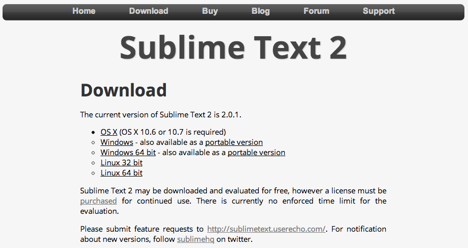

Sublime Text 2 下载页面：http://www.sublimetext.com/2
32 位元或 64 位元
如果你使用的是 64 位元作业系统，请选择 64 位元的版本，反之则选择 32 位元版本。
如果是 Windows 使用者，你不确定自己的作业系统是 32 位元还是 64 位元，有个办法就是选择 32 位元版本，因为现在的 64 位元系统也可以执行 32 位元的软体。而 Linux 使用者可以用以下指令来确认自己的作业系统：
uname -m
对于 OS X 使用者你可以忽略这些，因为 Sublime Text 2 for Mac 只有一种版本，下载就对了！:p
不过为了说明更完整，以下简单介绍各平台安装 Sublime Text 2 的差异：
Windows
Sublime Text 2 for Windows 提供了一般安装版本（normal）与绿色版本（portable）。
一般安装版本会将 Sublime Text 2 整合在功能表中，也会将主程式与 data 目录区分开来，这个部分会在目录结构一节说明；绿色版本则是将所有 Sublime Text 2 需要的档案，全部合并到一个文件夾内，你可以将这个文件夾放到任何地方，程式依然可以使用。
OS X
下载后点两下 .dmg 档案，然后将 Sublime Text 2 拖移到 Applications 文件夾内，便完成安装。
Linux
你可以手动下载 package 然后解压缩，或者是使用命令行工具：
cd /path/to/your/apps
wget http://url/to/sublime.tar.bz2
tar vxjf sublime.tar.bz2
如果你想要的话，也可以替执行档建立一个捷径（symbolic link）：
sudo ln -s /path/to/sublime_text /usr/bin/subl
如果你是第一次使用 Sublime Text 2，或是对于这个编辑器还不是很熟悉，建议先了解一下基本概观这个章节的内容。
开发者版本
Sublime Text 有三种发布版本的管道：
- Stable（预设）：最稳定、最可靠的版本，可能一个月或数个月才会更新一次，这是大部分开发者使用的版本；
- Dev：这是不稳定的版本，包含一些有待测试和考验的新功能，因此可能会有很多 bugs，通常一个月至少会更新两次（不过最近似乎在忙 Sublime Text 3 已经很久没动静了……）；
- Nightly：这是比 Dev 更快更新、更不稳定的版本，只开放给付费使用者下载；
如果你是在美国太空总署从事星战计画的工作，或是每天都要面临紧绷的截止日到来，一点闪失就会让自己粉身碎骨或是害得百万美元丢到水里，请使用 Stable 这个稳定版本，如果因为不稳定的版本让你的程式码出现不明 bug，结果让死星轰烂地球，这可不是我们乐见的。